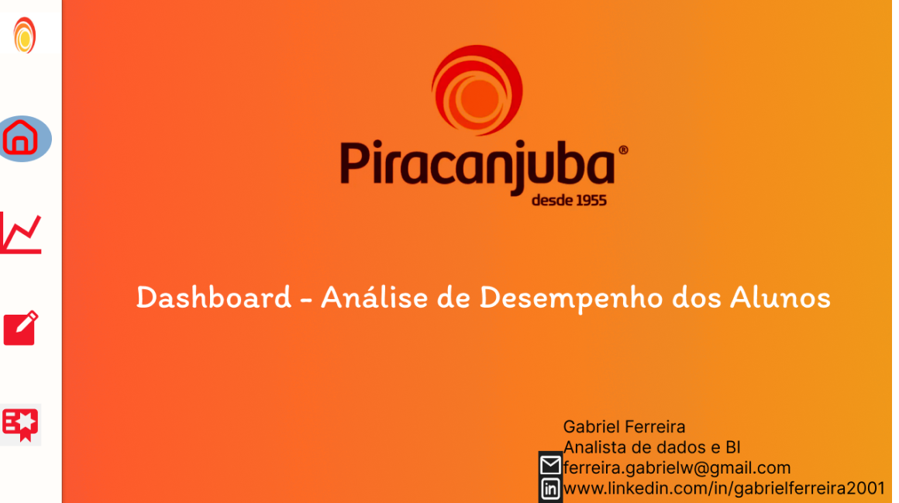
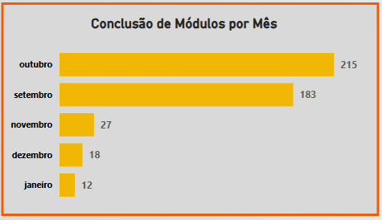
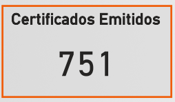

Project: Piracanjuba Dashboard - Student Engagement and Development Analysis
Introduction
This is a real project, consisting of the creation of a dashboard developed for Piracanjuba, with the primary objective of evaluating the engagement and development of employees participating in a technology degree course. The company acquired the course for its employees and requested an analytical tool to monitor progress, identify areas of success, and opportunities for improvement in the training process. The dashboard provides a clear view of the number of students, average study time, module completion progress, and certificate issuance, allowing Piracanjuba to make data-driven decisions to optimize its internal development programs.
Note: All employees (students) have been anonymized in the dataset.
Project Structure
The analysis was divided into four main pages in the dashboard, each focusing on different aspects of student engagement and development:
- Overview: Presents total student indicators and the average days of study.
- General Student Analysis: Details the completion of individual modules, the flow of new students per month, and the monthly module completion volume.
- Student Performance Analysis - Certificates: Focuses on issued certificates, showing the general total, issuance per student, and by content.
- Module Evaluation: Offers a view of the overall performance of modules (completed, pending, in progress) and a classification of student performance based on the number of completed modules.
Technologies Used
For the construction of this analytical dashboard, the tools employed were:
- Power BI Desktop: To connect data sources, perform the necessary modeling and transformation, and develop the interactive visuals that compose the dashboard. DAX measures were used for calculations and the M language for data handling in Power Query.
- Figma: The prototyping and design of the dashboard were done with Figma, ensuring an intuitive and visually appealing user experience, which was later exported and integrated into Power BI.
ETL Process (Extraction, Transformation, and Loading)
The ETL process for this project was structured to ensure the accuracy and readiness of the data for analysis:
- Extraction: Raw data was extracted from Excel spreadsheets, containing detailed information about students, their progress in modules, and issued certificates. These spreadsheets served as the primary data source for the analysis.
- Transformation: In Power Query, an integral part of Power BI, various cleaning and enrichment operations were performed. This included:
- Data treatment, ensuring consistency and quality.
- Creation of new columns and calculated metrics that would be essential for the analyses, using the M language.
- Data modeling was carefully defined, establishing relationships between tables and creating a schema that allowed for correct aggregation and filtering of information.
- Loading: After the extraction and transformation steps, the data was loaded into the Power BI data model, ready to feed all the charts and tables of the dashboard, allowing for interactive exploration.
Dashboard
The dashboard is organized into four distinct pages, each dedicated to a specific aspect of the analysis. The design, conceived in Figma and implemented in Power BI, ensures a clean interface, with clear and easily interpretable visuals. Interactivity allows users to navigate between pages and explore data at different levels of granularity, from an overview of engagement to the individual performance of modules and students.

Insights
The analysis of the data presented in the dashboard revealed crucial insights into the engagement and development of Piracanjuba students:
- Engagement Overview:
- The dashboard shows a total of 4,419 students enrolled in the course.
- The average study days is 27.28 days. This is an important indicator to measure the time students dedicate to learning, suggesting reasonable engagement with the platform or content.

- Module Completion and Student Flow:
- The “Welcome!” and “Technical development” modules stand out with 219 and 192 completions, respectively, indicating they are entry points or modules of high relevance and engagement.
- Fundamental modules such as “Initial Module - Power BI” (135 completions), “Power BI II” (73 completions), and “SQL Essentials” (70 completions) show a good completion rate, which is positive for the development of technical skills.
- In contrast, more advanced or specific modules, such as “Q&A Live Session” (16 completions) and “Pillar 4.3 Real Project” (17 completions), have significantly fewer completions. This may indicate greater difficulty, less interest, or that they are optional modules for a smaller group of students.

- Monthly Entry and Completion Flow:
- The entry of New Students had notable peaks in January (1,088) and September (779), with a drop in December (644) and two significant drops in October and November (265 and 64 respectively).
- Module Completion per Month shows a different pattern. Although September (183) and October (215) have a high volume of completions, January (12) and December (18) record the lowest numbers. This may reflect a delay between student entry and module completion, or that completions are concentrated in specific months of the academic year.

- The entry of New Students had notable peaks in January (1,088) and September (779), with a drop in December (644) and two significant drops in October and November (265 and 64 respectively).
- Certificate Issued Analysis:
- A total of 751 Certificates Issued demonstrates a tangible result of the training program.

- The distribution of certificates per student reveals that student #4 stands out with 6 certificates.

- Regarding Certificate Issuance by Content, “Power BI 1.0” (197 certificates) and “Excel” (168 certificates) are the contents with the highest number of certifications, highlighting the demand and relevance of these tools. SQL (153 certificates) also performs well. Contents like “Pentaho” and “Welcome” have a very low number of certificates (1 each), which may indicate that they are niche or introductory modules not focused on certification.
- A total of 751 Certificates Issued demonstrates a tangible result of the training program.
- Overall and Per-Student Module Performance:
- Of the 26 total modules, most students are “In progress” (79.35%). Only 7.61% of students have “Completed” all modules, and 13.04% have “Pending” modules. This highlights the importance of strategies to encourage completion and follow-up for students in progress.
- The “Student Dedication” classification categorizes performance: “Good” (> 20 modules completed), “Medium” (8 to 19 modules completed), and “Poor” (< 8 modules completed).
- The “Student Performance” panel shows that most are “In progress”.

- Of the 26 total modules, most students are “In progress” (79.35%). Only 7.61% of students have “Completed” all modules, and 13.04% have “Pending” modules. This highlights the importance of strategies to encourage completion and follow-up for students in progress.
- It is also possible to visualize individual performance; this ability to identify individualized performance allows for targeted interventions, such as personalized support for “Poor” performing students or recognition for “Good” ones.
Considerations
The dashboard offers a solid foundation for improving corporate education strategies at Piracanjuba. Based on the insights obtained, some important considerations emerge:
- Incentivizing Completion: With a large portion of students “In progress,” it is crucial to develop strategies to convert this progress into completion. This can include incentive campaigns, automated reminders, tutoring sessions, or gamification to keep students engaged until the end.
- Monitoring Specific Modules: The low completion rate of more advanced or specific modules suggests the need to evaluate the difficulty of the content, the demand for these topics, or the need for more support for students starting them.
- Optimizing Monthly Flow: The disparity between new student enrollment and module completion per month indicates the need to understand employee study cycles. Module offerings can be planned according to periods of higher engagement, or acceleration programs can be created for completion.
- Exploring Certifications: The high number of certificates in Power BI and Excel validates the relevance of these topics. The company can explore creating new modules or deeper dives into these topics to meet demand. For topics with few certifications, a review of content or presentation format may be necessary.
- Individualized Performance Management: The ability to classify student performance (“Good”, “Medium”, “Poor”) is a differentiator. Piracanjuba can use this information to offer mentorship to “Poor” performing students, celebrate “Good” ones and perhaps encourage them to become “mentors” for colleagues, and provide constructive feedback to “Medium” students.
Conclusion
The Dashboard was a strategic analytical tool that transformed employee engagement and development data into actionable intelligence. Its main contribution lies in its ability to:
- Provide a clear and comprehensive view of the workforce’s educational progress.
- Identify engagement patterns, bottlenecks in module completion, and high-performance areas.
- Enable proactive management of the training program, from planning course offerings to individualized student support.